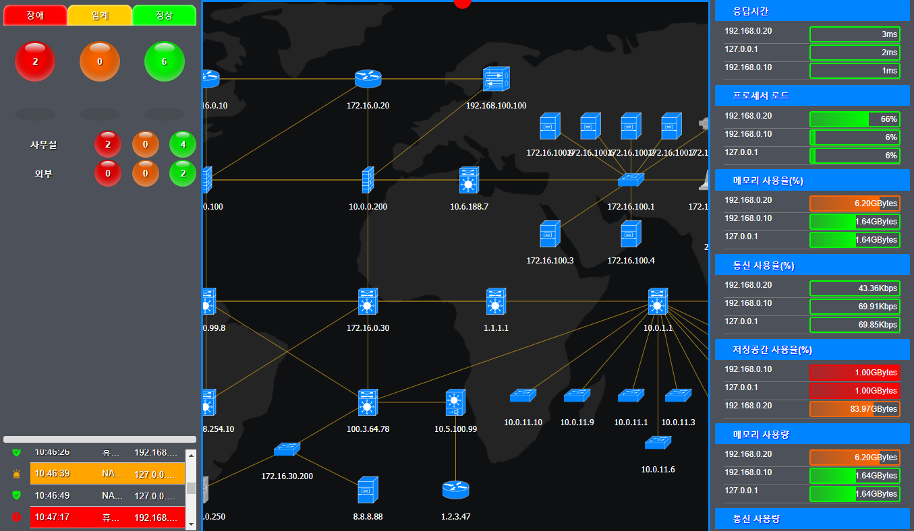
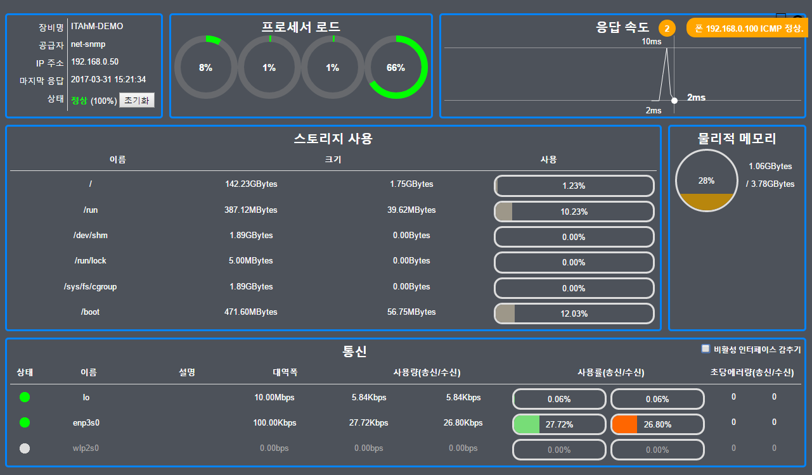
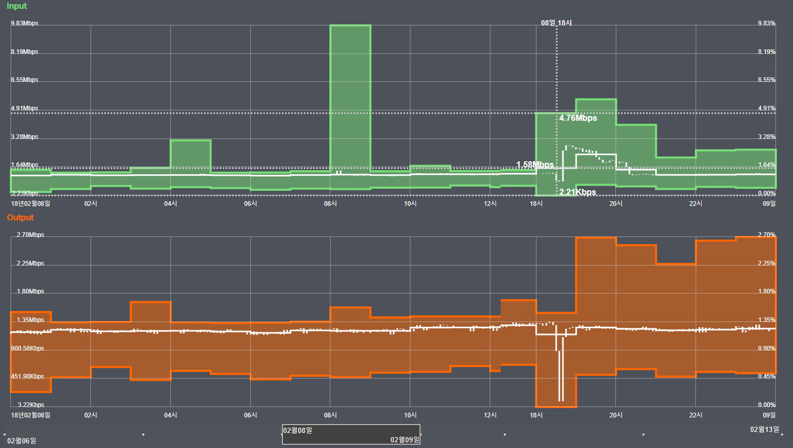
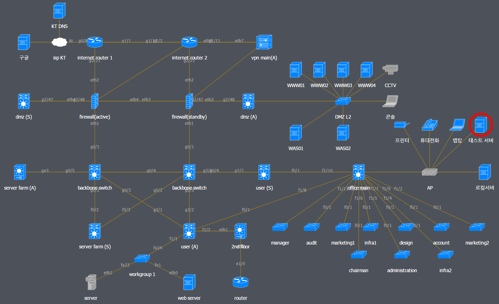
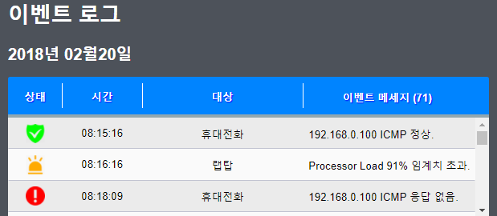
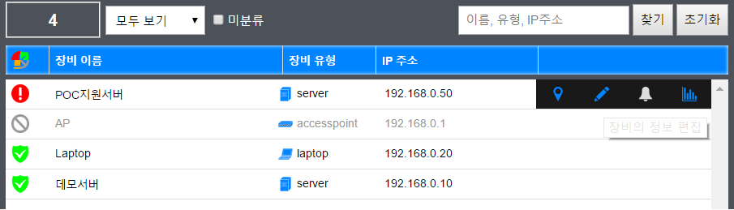

경량 NMS(Network Management System)의 강자 아이탐(ITAhM)
Infrastructure Topology Administration Module
NMS란?
- Network Management System 의 약어로써 의미대로 네트워크를 관리하는 시스템을 뜻합니다.
- 관리의 도구로 일반적으로 SNMP (Simple Network Management Protocol)를 사용하며 네트워크 장비 뿐만 아니라 SNMP를 지원하는 모든 전자 장치는 NMS의 대상이 될 수 있습니다.
- 관리의 대상이 되는 장치로부터 프로세서, 메모리, 저장소, 통신 등의 상태와 성능을 주기적으로 수집하고 가공하여 관리자에게 유의미한 결과물을 보여주는 것을 목적으로 합니다.
- 또한 장애상황이나 성능이 임계를 초과하는 즉시 관리자에게 이를 알리는 역할을 합니다.
솔루션 개요
- SNMP v2c 표준 프로토콜을 지원하는 모든 장치의 성능 정보를 수집하여 사용자의 편의에 맞게 보여주는 NMS의 기본 기능을 성실하게 구현하였습니다.
- UI는 html5 표준을 준수하여 개발되었고 별도의 플러그인이 필요하지 않습니다. (크롬, IE, 파이어폭스, 오페라 등)
- SNMP 에이전트는 물론 데이터베이스와 웹서버까지 상용 솔루션을 사용하지 않고 자체 개발하여 낮은 사양의 서버로도 고성능의 서비스를 이용할 수 있습니다.
- 사용자 편의(UX)를 최우선으로 보다 적은 조작을 통해 더 많은 서비스를 제공하도록 하였습니다.
대쉬보드

대쉬보드
- 장치의 상태별로 정상인것과 정상이 아닌것, 정상이 아닌것은 다시 임계를 초과한것과 응답이 없는 것으로 나누어 통계를 보여주며,
전체 통계를 다시 그룹별로 나누어 보여줍니다.
- 대쉬보드는 수집된 성능지표를 사용량 및 백분율 순서대로 최대 10개까지 보여줍니다.
- 대쉬보드에 표시할 성능지표의 순서를 변경할 수 있고 더하거나 제거할 수도 있습니다.
- 전체 인프라의 상태를 한눈에 확인할 수 있도록 구성도와 이벤트 메세지를 대쉬보드 화면에 함께 구성하여 보여줍니다.
성능 모니터

성능 모니터
- 응답속도, 프로세서, 메모리, 스토리지, 통신 등 대부분의 장치로부터 수집한 실시간 정보를 정리하여 보여줍니다.
- 각 성능지표들은 화면의 크기에 맞게 재배열 되는 반응형 레이아웃을 가집니다.
- 장치의 온도, 프린터의 카트리지 등과 같은 특정 장치 고유의 정보가 있다면 함께 보여주도록 구성할 수 있습니다.
성능 차트

성능 차트
- 각각 수집된 성능은 차트를 통해 확인할 수 있으며 최대값과 최소값의 영역 내 평균값을 꺾은 선으로 보여줍니다.
- 좌측Y축은 절대값을, 우측Y축은 최대 성능 대비 백분률을 표시하여 줍니다.
- 차트의 데이터는 csv 파일로 저장할 수 있습니다.
- 차트가 보여주어야 할 날짜의 선택은 날짜 선택 커서를 드래그 함으로써 편리하게 조작 할 수 있고 차트의 갱신 또한 지연없이 빠르게 이루어 집니다.
실시간 그래프
- 5초단위로 갱신하는 실시간 차트를 제공합니다.
구성도

구성도
구성도 축소
- 구성도는 확대와 축소 그리고 장치의 이동이 자유로우며, 무한히 많은 장치를 지연 없이 그려낼 수 있습니다.
- 위 축소된 구성도는 약 4,400대의 장치를 포함하고 있습니다.
- 백터 그래픽을 사용하므로 확대, 축소시 이미지의 깨짐 현상이 없습니다.
- IP주소, 장치의 이름 또는 인터페이스 이름을 표시하거나 감출수 있습니다.
- 응답이 없는 장치 주변에 붉은원이 점멸하고 임계를 초과한 장치 주변에는 노란색원이 점멸합니다.
아이콘
아이콘
- 기본적으로 제공되는 CISCO 스타일의 아이콘 이외에 사용자가 원하는 아이콘을 추가하거나 변경하여 사용할 수 있습니다.
이벤트

이벤트 목록
- 수집된 이벤트를 날짜별로 조회할 수 있습니다.
- 정상, 임계, 장애 세가지 상태의 아이콘으로 구분하여 보여줍니다.
- 이벤트 발생시 안드로이드 앱으로 이벤트를 전송하거나 SMS서비스와 연동할 수 있도록 커스터마이징 할 수 있습니다.
장치 목록 관리

장치 목록
- 장치 정보에 그룹(라벨)을 설정한 경우 그룹별로 목록을 관리할 수 있습니다.
- 하나의 장치에 여러 개의 라벨을 설정할 수 있습니다.
- 장치의 이름, IP주소 등 키워드를 통해 장치를 검색할 수 있습니다.
- 목록에서 장치를 선택하면 구성도에 선택된 장치가 표시되어 성능 조회 등 다른 조작으로 연결하기가 수월합니다.
- 장비는 각각 등록할 수 있고, 기존 목록이 있다면 import할 수도 있습니다.
- 장비는 네트워크 대역별로 자동 탐지할 수 있습니다.
특장점
- 웹브라우저와 HTML을 UI로 사용하고 플러그인을 배재하므로 접근성이 우수하고 동작 속도가 빠릅니다.
- 플래시플레이어나 액티브엑스 등 기타 플러그인을 사용하여 특정 브라우저에서 동작하지 않거나
느리게 동작하는 제품들이 여전히 많습니다.
- 주요 브라우저는 향후 플러그인 허용을 중단할 계획에 있습니다.
- 데이터베이스, 웹서버, 구성도 및 차트 라이브러리 등 솔루션을 구성하는 모든 응용프로그램이 자체 제작 되었습니다.
- 상용 프로그램을 사용하는 어떤 제품보다 뛰어난 성능을 보입니다.
- 상용 응용프로그램 사용시 라이선스 비용에 따른 원가의 증가를 막고 적은 비용으로 솔루션을 서비스 합니다.
- 필요한 기능만 구현하므로 자원 대비 성능이 뛰어나 하드웨어 구매 비용 절감 효과가 있습니다.
- 자체 기술이므로 신속한 유지보수와 장애 대응이 가능합니다.
- 집적된 UX
- 실무자의 의견을 최대한 집적하여 UX를 구현하였습니다. 최소의 조작만으로 원하는 대부분의 업무를 수행할 수 있습니다.
- 무한 확장 가능한 구성도
- 일부 솔루션들이 크기가 정해진 캔버스에 구성도를 그리는것과 달리 확대, 축소, 이동이 자유로운 무한 캔버스에 구성도를 그립니다.
- 구성도에 모든 장치를 그려낸 후 원하는 부분만 확대하여 보거나 때로는 축소하여 전체 장치들의 연결 상태를 한눈에 확인할 수 있습니다.
- 그룹화도 가능합니다.
- 간편한 기간별 성능 차트 조회
- 기간별 성능조회시 시작날짜와 마지막날짜를 직접 입력하거나 달력 컨트롤을 이용해 조회하는 기성 제품과 달리
드래그를 통해 간편히 조회할 수 있으며 기간 변경에 따른 차트 다시 그리기를 지연 없이 즉시 그려 냅니다.
- 장비 등록 절차
- 프로파일 개념을 도입하여 장치가 사용하는 모든 SNMP 정보를 미리 등록 해 두고 장치에 맞는 프로파일을 스스로 찾아 등록합니다.
- 추가로 장비를 등록하는데 필요한 단 하나의 정보는 IP 주소 입니다.
- 빠르게 동작하고 사용하기 쉬운 UI를 구현하기 위하여 불필요한 과정을 모두 생략한 결과로 직관적이고 간편한 UX를 제공합니다.